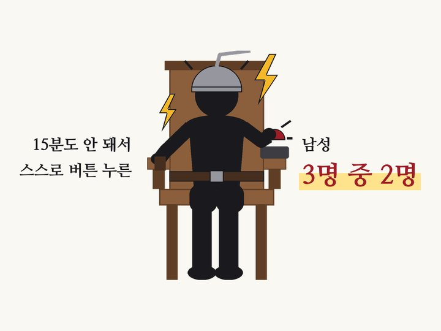
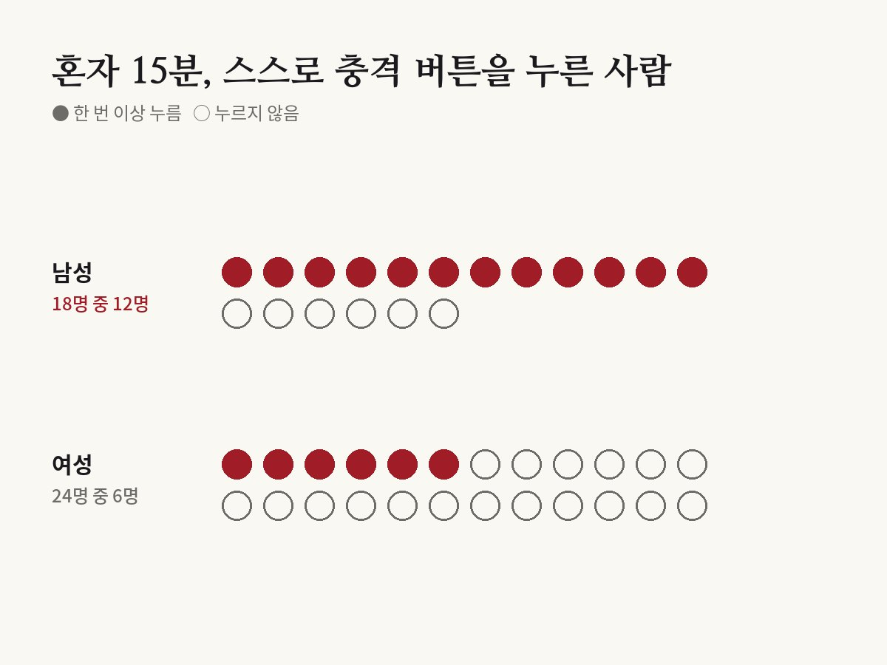

빈 방에 혼자 있을 바엔 차라리 전기 충격 받겠다
Timothy D. Wilson et al. · Science, 2014

01결과
미국 버지니아대 티머시 윌슨 교수 연구진이 2014년 《사이언스》에 발표한 실험이에요. 연구진은 사람들을 아무것도 없는 방에 혼자 앉혔어요. 휴대폰도, 책도, 펜도 없었어요. 할 일은 15분 동안 그냥 생각하며 시간을 보내는 것뿐이었어요.
방에는 버튼이 하나 있었어요. 누르면 발목에 약한 전기 충격이 왔어요. 연구진은 원하면 눌러도 된다고만 말했어요.
남자는 18명 중 12명, 여자는 24명 중 6명이 적어도 한 번 스스로 버튼을 눌렀어요. 한 남성은 15분 동안 190번이나 눌러서, 평균을 낼 때는 따로 뺐을 정도였어요.

02왜 이상한가
이 사람들은 아무 생각 없이 버튼을 누른 게 아니었어요. 실험 전에 모두 같은 충격을 한 번 맛봤어요. 그리고 다시 받지 않을 수 있다면 돈을 내겠다고까지 답한 사람들이었어요.
피하고 싶다던 충격을 스스로 고른 거예요. 그만큼 아무 자극 없이 생각만 하는 15분이 견디기 힘들었다는 뜻이에요.
연구진은 '불쾌한 자극이라도 아무것도 안 하는 것보다는 낫다'고 느낀 사람이 많았다고 해석했어요.
03학생만의 이야기가 아니다
충격 실험은 모두 11개 연구 가운데 하나였어요. 다른 연구들에서 사람들은 6분에서 15분 동안 혼자 생각만 했고, 절반 넘는 사람이 집중하기 어려웠다고 했고, 절반가량은 별로 즐겁지 않았다고 답했어요.
대학생만 그런 것도 아니었어요. 18세부터 77세까지 여러 나이의 일반인에게 시켜도 결과가 비슷했어요. 나이, 학력, 소득, 스마트폰이나 SNS를 얼마나 쓰는지와도 크게 관계가 없었어요.
실험실이 낯설어서 그런 건 아닐까 싶어 대학생들에게 집에서도 해 보게 했어요. 그러자 세 명 중 한 명꼴이 몰래 휴대폰을 보거나 음악을 듣거나 자리에서 일어났다고 털어놨어요.
사람들은 생각만 하는 것보다 책을 읽거나 음악을 듣는 것처럼 단순한 일을 하는 쪽을 더 즐겼어요.
04스마트폰 탓일까
많은 사람이 '요즘 사람들이 휴대폰에 길들어서'라고 생각하기 쉬워요. 하지만 연구진은 스마트폰을 원인으로 보지 않았어요.
오히려 순서가 반대일 수 있다고 말해요. 사람의 마음은 원래 바깥세상의 무언가에 붙어 있고 싶어 하고, 휴대폰은 그 마음을 채우는 손쉬운 도구라는 거예요.
많은 사람이 명상처럼 생각을 다루는 훈련을 따로 배우려는 것도 그만큼 머릿속에 혼자 머무르기가 쉽지 않다는 방증일지 몰라요.
05뒤이은 연구
2022년 일본과 영국 연구진은 질문을 바꿔 봤어요. 해 보기 전에 '그냥 앉아서 생각만 하는 시간이 얼마나 즐거울지' 짐작하게 하고, 실제로 해 본 뒤의 느낌과 비교한 거예요.
대학생 259명이 참여한 여섯 번의 실험에서 사람들은 생각만 하는 시간을 실제보다 덜 즐거울 거라고 짐작했어요. 텅 빈 회의실이든, 빛과 소리를 막은 작은 부스 안이든, 3분이든 20분이든 결과가 같았어요.
인터넷 뉴스를 보는 시간과 비교해도 실제로 느낀 즐거움은 뚜렷한 차이가 없었어요. 그런데도 미리 고르라고 하면 사람들은 뉴스 쪽을 골랐어요. 생각이 싫어서라기보다, 생각하는 시간이 얼마나 괜찮은지 미리 낮춰 보고 피한다는 거예요.
다만 아주 즐거웠다는 뜻은 아니에요. 7점 만점에 3~4점 정도로, '생각보다 나았다'는 수준이었어요. 참가자도 일본과 영국 대학생뿐이었어요.
06나와 무슨 상관일까
엘리베이터 안, 신호 대기, 줄 서는 몇 분에도 습관처럼 휴대폰을 꺼내는 이유를 이 연구가 일부 설명해 줘요. 우리 마음은 빈 시간을 견디는 데 익숙하지 않아요.
그렇다고 이상한 일은 아니에요. 대부분의 사람이 그래요. 혼자 생각하는 시간이 어색하다면 산책처럼 몸을 가볍게 움직이며 생각해 보거나, 생각할 거리를 미리 정해 두는 것도 방법이에요.
07읽을 때 주의할 점
전기 충격 실험에 참여한 사람은 42명으로 적었어요. 충격도 약한 수준이었어요.
실험실처럼 '이제 생각하세요'라는 지시를 받은 상황이었어요. 스스로 고른 혼자만의 시간과는 다를 수 있어요.
다른 학자들은 반론 논문을 냈어요. 같은 자료를 다시 보면 생각하는 시간의 평균 평가는 '그럭저럭 즐겁고 그럭저럭 지루한' 중간 수준이었고, 충격 실험 참가자의 절반 넘게는 버튼을 한 번도 누르지 않았다는 거예요. 결과를 '사람은 생각을 싫어한다'로 단정하기는 어려워요.
바로잡습니다
- 2022년 후속 연구의 실험 장소를 '빛이 거의 없는 작은 텐트'에서 '빛과 소리를 막은 작은 부스'로 바로잡았습니다. 190번 누른 남성은 '분석에서' 뺀 것이 아니라 '평균을 낼 때' 뺀 것으로, 혼자 생각한 연구들의 결과는 '대부분 즐겁지 않았다'에서 '절반가량은 별로 즐겁지 않았다'로, 반론 논문의 내용은 '꽤 괜찮았다는 사람이 적지 않았다'에서 '평균 평가는 중간 수준, 충격 실험 참가자의 절반 넘게는 한 번도 누르지 않았다'로 바로잡았습니다.
원 논문
- Wilson et al. (2014), Science, doi:10.1126/science.1250830
- doi.org/10.1126/science.1250830